This is a series of captioned pictures showing how to use a drillpress to make a centered cylindrical coupler that attaches to a DC motor with a shaft of small diameter.
Figure 1 shows what we need. The motor shaft is so small that it is hard to attach it to anything. The aluminum coupler makes it better - we can glue to it with superglue or epoxy, or can use a setscrew to attach a second coupler. The difficulty is getting a well-centered hole in the aluminum cylinder.
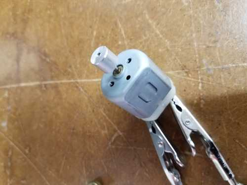
1. Here is the goal.
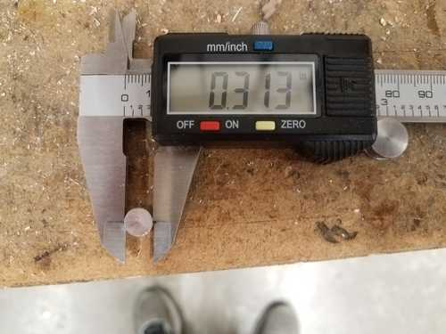
2. First, find an approiate rod, and measure it carefully. This one is a standard diameter - 5/16" or 0.3125".
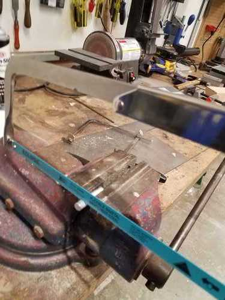
3. Use a hacksaw to cut off a piece.
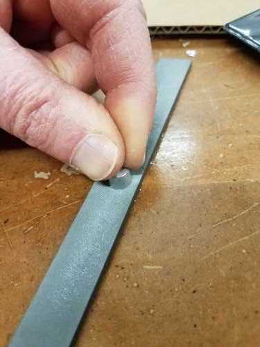
4. Clean up with a good file. The ends of the cylinder are not perfectly parallel or perpendicular to the axis, but good enough for many purposes.
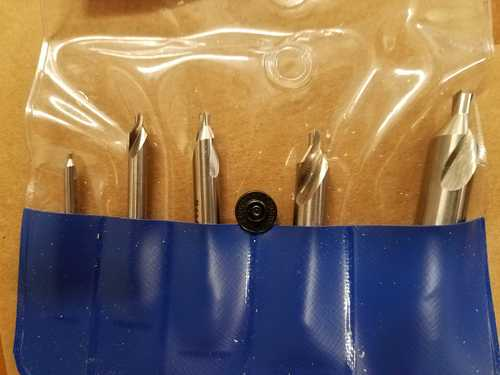
4.5. These are center drills. They self-center when making a hole. One has a shoulder that is exactly 5/16".
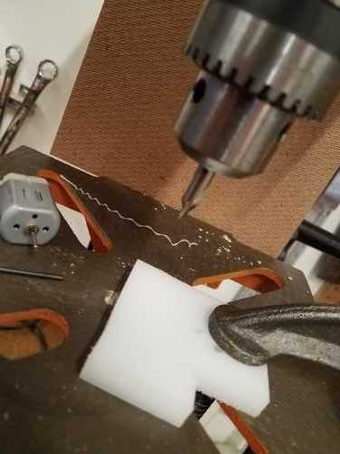
5. Clamp a piece of material to the drill press table, and leave it in place.
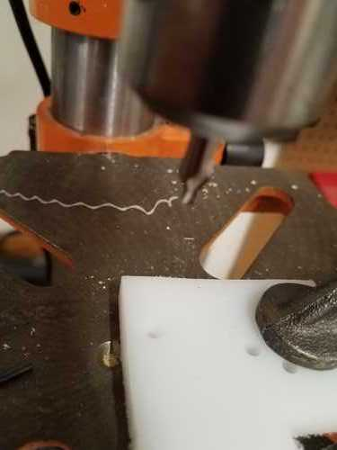
6. Drill a hole, continuing down to make a hole large enough to fit the aluminum cylinder.
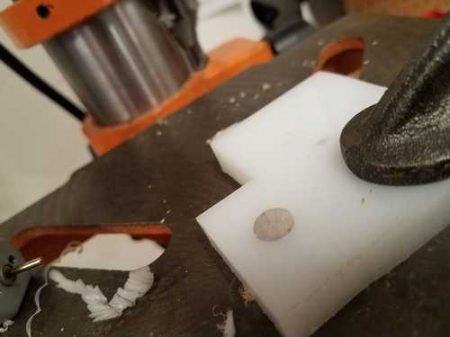
7. Place the aluminum cylinder in the hole.
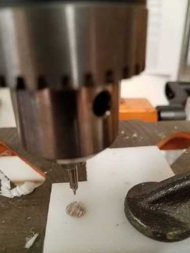
8. Use the smallest center drill to drill a hole in the center of the little cylinder.
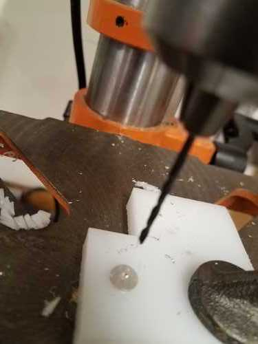
9. Use a drill of size just larger that the motor shaft to drill a hole through the cylinder.
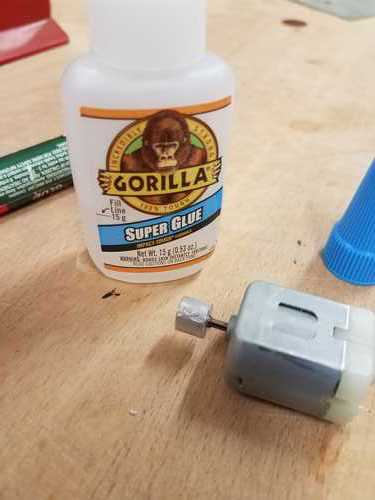
10. The result is a cylinder with a centered hole that slips over the motor shaft with very little slop. Use superglue to glue the coupler to the shaft.